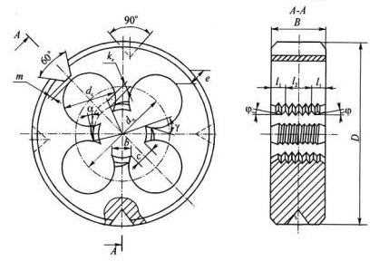
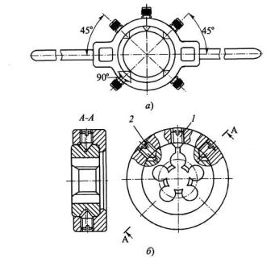
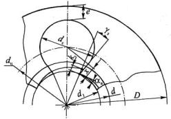

Резьбонарезная плашка - это гайка, превращенная в режущий инструмент путем сверления стружечных отверстий и формирования на зубьях режущих перьев передних и задних углов.
Плашки применяют для нарезания наружных резьб на болтах, винтах, шпильках и других крепежных деталях. По форме наружной поверхности плашки бывают: круглые, квадратные, шестигранные, трубные. Для слесарных работ они делаются разрезными и зажимаются в воротках.
Самое широкое применение нашли плашки круглые, как наиболее технологичные и простые в эксплуатации. Они изготавливаются из калиброванных прутков быстрорежущей стали на токарных прутковых станках-автоматах.
На рисунке ниже показана конструкция круглой плашки и ее основные конструктивные и геометрические параметры. Конструктивные параметры: наружный диаметр плашки D толщина В, диаметры стружечных отверстий dc и окружности их центров dц, ширина просвета с,ширина пера b, минимальная толщина стенки е. Геометрические параметры плашки: передний угол γ, задний угол α и угол заборного конуса φ. На наружной поверхности плашки имеются 3 или 4 конических углубления с углом при вершине 90° для крепления в воротке или кольце. На этой же поверхности плашек выполнен трапециевидный паз с углом 60°, образующий перемычку толщиной т = 0,4...1,5 мм, которую после двух-трех переточек плашки разрезают.
Плашки устанавливаются в воротке при работе вручную или в кольце при работе на станках c подвижной посадкой по наружному диаметру. Во избежание перекоса плашки оси крепежных винтов смещены относительно осей конических углублений так, чтобы надежно прижимать торец плашки к торцу посадочного гнезда. Винтом 1, входящим в паз после разрезания перемычки, и крепежными винтами 2, входящими в углубления, можно регулировать диаметры резьбы плашки после износа.
В основном плашками нарезают остроугольную крепежную резьбу диаметром от 2 до 36 мм, реже от 42 до 48 мм. Для калибровки резьб, нарезанных другими инструментами (резцами, фрезами), применяют плашки с резьбовым диаметром d 56...135 мм и выше.
Геометрические параметры плашки. Передний угол γ измеряется между радиусом, проведенным в точку режущей кромки зуба (через него проходит основная плоскость), и касательной к передней поверхности (рис. 16). Так как последняя является частью поверхности стружечного отверстия, то передний угол получается очень большим. Его можно уменьшить путем срезания по передней поверхности зенкером (до термообработки) или путем подточки шлифовальными кругами малых диаметров (после термообработки) на специальных станках при удалении части перемычки, остающейся после сверления стружечных отверстий. При этом прямолинейный участок передней поверхности делается несколько больше, чем высота профиля резьбы, т.е. x>h. Угол заточки γз выбирается в зависимости от обрабатываемого материала: для твердых материалов γз = 10... 15°, для легкообрабатываемых γз = 20...25°, у стандартных плашек γз = 15...20°.
При обработке вязких материалов с целью увеличения стружечного отверстия и направления стружки в сторону подачи аналогично метчикам иногда после термообработки абразивными головками делают подточку по передней поверхности режущих зубьев под углом к оси плашки λ = 15°. Задний угол αв на вершинных кромках зубьев заборного конуса получают методом затылования по архимедовой спирали. У стандартных плашек αв = 6...9°.
Плашки для конических резьб применяются при нарезании наружных резьб в трубопроводах высокого давления. Особенности конструкций таких плашек: 1) плашки работают не напроход, а только с одной стороны, имеющей заборный конус с углом 2φ = 30...55°; 2) перья делают как можно меньшей ширины для снижения сил резания и трения; 3) число стружечных отверстий zc = 4...7, для d= 1/6...2"; 4) углы режущих зубьев γ = 20°, α = 6°.
Наибольшая нагрузка на плашку возникает в конце нарезания резьбы. Во избежание поломок таких плашек необходимо применять патроны с предохранительным устройством от перегрузки.